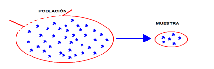

1 Introducción al análisis descriptivo de datos
1.1 Concepto teórico
La estadística descriptiva es el conjunto de técnicas y procedimientos que permiten recolectar, organizar, resumir, presentar e interpretar datos con el fin de describir un fenómeno de estudio de manera clara y útil. Su propósito principal no es generalizar resultados a toda una población, sino describir adecuadamente la información disponible en una muestra o conjunto de observaciones. En este sentido, la estadística descriptiva constituye la base para estudios posteriores de carácter inferencial.
En un estudio estadístico, las etapas fundamentales incluyen: definición del problema y de los objetivos, selección y recogida de información, organización de los datos en tablas y gráficos, resumen mediante medidas numéricas, análisis de resultados, conclusiones y, eventualmente, predicción. Estas fases muestran que la estadística no se limita a calcular fórmulas, sino que implica un proceso ordenado de razonamiento cuantitativo.
Entre los conceptos elementales destacan los siguientes:
Población. Es el conjunto de personas, objetos o eventos sobre los cuales interesa estudiar una o varias características. Puede ser finita o infinita según el número de elementos que la integran.
Muestra. Es un subconjunto de la población que se selecciona para realizar el estudio. Su tamaño se representa usualmente por \(n\). Cuando la muestra representa adecuadamente a la población, permite describirla de forma útil.
Variable estadística. Es la característica de interés que se observa o mide en cada elemento de la población o muestra. Los valores observados de la variable constituyen los datos.

Las variables pueden clasificarse en:
- Cualitativas, si expresan atributos o categorías.
- Cuantitativas, si expresan cantidades numéricas. Estas, a su vez, pueden ser:
- Discretas, cuando sus valores se pueden contar.
- Continuas, cuando pueden tomar cualquier valor dentro de un intervalo.
Además, las variables se estudian según su escala de medición:
- Nominal, cuando solo clasifica sin orden.
- Ordinal, cuando clasifica con orden.
- De intervalo, cuando existe distancia entre valores pero no un cero absoluto.
- De razón, cuando existe distancia y además un cero absoluto con significado físico.
En términos académicos y profesionales, comprender estos conceptos es esencial porque de ellos depende la correcta elección de tablas, gráficos, medidas descriptivas y modelos de análisis.
1.2 Ejemplo aplicado
Supóngase que se desea estudiar el rendimiento académico de estudiantes de segundo ciclo de ingeniería en una asignatura de Estadística.
- Población: todos los estudiantes matriculados en la asignatura.
- Muestra: 12 estudiantes seleccionados para un análisis preliminar.
- Variable 1: calificación del primer parcial.
- Variable 2: sexo del estudiante.
- Variable 3: número de horas de estudio semanales.
En este contexto:
- La calificación es una variable cuantitativa.
- El sexo es una variable cualitativa nominal.
- Las horas de estudio son una variable cuantitativa, generalmente continua si se registran con decimales.
A continuación, se observa una pequeña muestra de datos:
estudiante <- 1:12
calificacion <- c(7.5, 8.0, 6.8, 9.1, 7.2, 8.4, 6.5, 7.9, 8.8, 7.0, 8.2, 6.9)
sexo <- c("F", "M", "M", "F", "F", "M", "M", "F", "F", "M", "F", "M")
horas_estudio <- c(4, 5.5, 3, 7, 4.5, 6, 2.5, 5, 6.5, 3.5, 5.5, 3)
datos <- data.frame(estudiante, calificacion, sexo, horas_estudio)
datos## estudiante calificacion sexo horas_estudio
## 1 1 7.5 F 4.0
## 2 2 8.0 M 5.5
## 3 3 6.8 M 3.0
## 4 4 9.1 F 7.0
## 5 5 7.2 F 4.5
## 6 6 8.4 M 6.0
## 7 7 6.5 M 2.5
## 8 8 7.9 F 5.0
## 9 9 8.8 F 6.5
## 10 10 7.0 M 3.5
## 11 11 8.2 F 5.5
## 12 12 6.9 M 3.0Este ejemplo muestra cómo una base de datos puede contener simultáneamente variables cualitativas y cuantitativas, y cómo cada una requiere un tratamiento estadístico adecuado.
1.3 Implementación en R
A continuación se presenta una implementación básica en R para identificar y resumir las variables del ejemplo.
## 'data.frame': 12 obs. of 4 variables:
## $ estudiante : int 1 2 3 4 5 6 7 8 9 10 ...
## $ calificacion : num 7.5 8 6.8 9.1 7.2 8.4 6.5 7.9 8.8 7 ...
## $ sexo : chr "F" "M" "M" "F" ...
## $ horas_estudio: num 4 5.5 3 7 4.5 6 2.5 5 6.5 3.5 ...La función str() permite identificar la estructura del conjunto de datos y distinguir variables numéricas y categóricas.
1.3.2 Resumen de la variable calificación
## Min. 1st Qu. Median Mean 3rd Qu. Max.
## 6.500 6.975 7.700 7.692 8.250 9.1001.3.5 Clasificación simple de variables
tipos_variables <- data.frame(
Variable = c("calificacion", "sexo", "horas_estudio"),
Tipo = c("Cuantitativa", "Cualitativa", "Cuantitativa"),
Subtipo = c("Continua", "Nominal", "Continua")
)
tipos_variables## Variable Tipo Subtipo
## 1 calificacion Cuantitativa Continua
## 2 sexo Cualitativa Nominal
## 3 horas_estudio Cuantitativa ContinuaEste primer contacto con R permite al estudiante conectar los conceptos teóricos con el tratamiento computacional de los datos, lo cual es coherente con el enfoque práctico de la asignatura.
1.4 Ejercicio propuesto
En una planta industrial se selecciona una muestra de 10 motores para registrar información técnica:
- temperatura de operación en °C,
- estado del motor (operativo, en mantenimiento, fuera de servicio),
- número de fallas detectadas en el mes.
Construya una propuesta de base de datos en R y responda:
- ¿Cuál es la población?
- ¿Cuál es la muestra?
- ¿Cuáles son las variables del estudio?
- Clasifique cada variable en cualitativa o cuantitativa.
- En el caso de variables cuantitativas, indique si son discretas o continuas.
- Indique la escala de medición más adecuada para cada variable.
Puede usar como guía la siguiente estructura:
1.5 Caso real (ingeniería)
En ingeniería industrial, eléctrica, civil o de telecomunicaciones, el análisis descriptivo de datos comienza siempre por una correcta definición de la población, la muestra y las variables de interés. Por ejemplo, en control de calidad puede estudiarse una población de productos fabricados; en mantenimiento, una muestra de equipos evaluados; en tránsito, un conjunto de conteos vehiculares; y en energía, mediciones de voltaje, corriente o temperatura de operación.
Si estas variables no se clasifican correctamente desde el inicio, pueden cometerse errores metodológicos importantes, como aplicar medidas numéricas a variables meramente categóricas o construir representaciones gráficas inadecuadas. Por ello, esta unidad constituye el punto de partida conceptual para todo el Bloque 1 de Estadística Descriptiva.